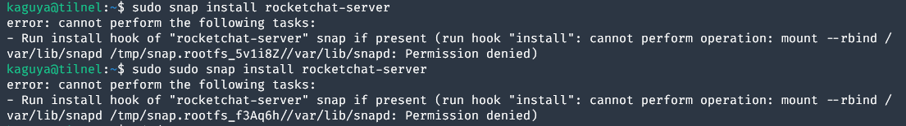
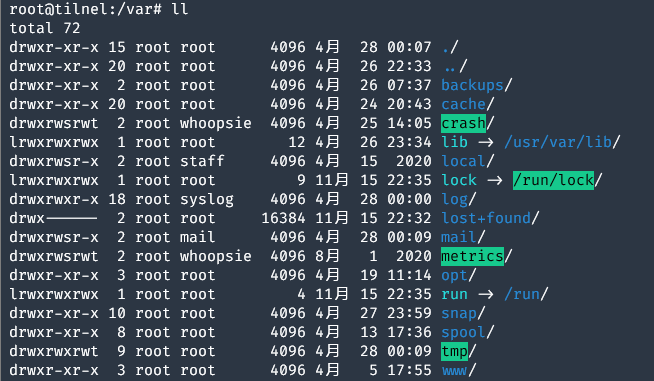
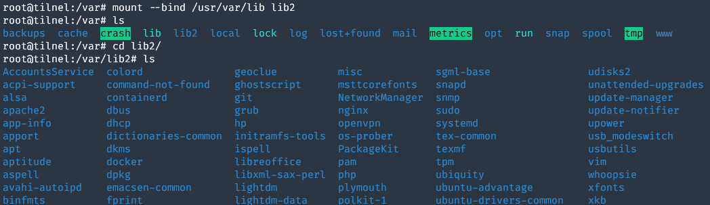
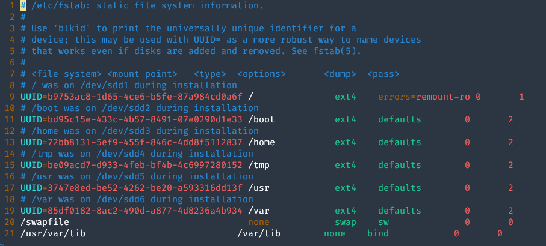
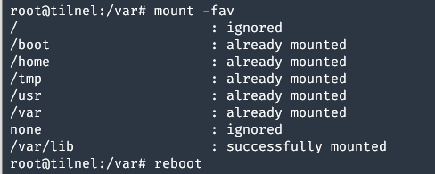
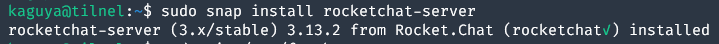

由软链接/var/lib导致的snap安装时的挂载权限问题
条评论上篇文章说到，我为了空出 /var 的空间，把 /var/lib 制作成了软链接，一切看起来都非常的和平。直到今天：
于是我萌生了一个想法：既然TX不给玩，就自己弄一个IM吧！（指白嫖开源项目）
在Github上面找了一会儿，发现 Rocket.Chat 这个项目看起来比较靠谱。兴冲冲地 sudo snap install rocketchat-server。

发现，snap 作为沙盒化的软件包格式，单独挂载了自己的文件系统。如果 /var/lib 是软链接的话，就没有办法用 mount --rbind 来挂载了。

既然可以挂载目录到另一个目录，那我岂不是也可以把 /usr/var/lib 挂载到 /var/lib ?
说着，首先试了一波，
1 | mount --bind /usr/var/lib/ /var/lib2 |

可以看到，目录被挂载过来，所有的文件都可以正常显示了。
这样，我们就可以把这个挂载项加进 /etc/fstab 让它开机自动挂载：

保存时候，用 mount -fav 测试一下写得对不对：
- -f, –fake dry run; skip the mount(2) syscall
- -a, –all mount all filesystems mentioned in fstab
- -v, –verbose say what is being done
得到以下输出：

这说明最后一项可以成功挂载。重启之后，重新运行安装：

成功！
<EOF>